招新落幕，新程将启
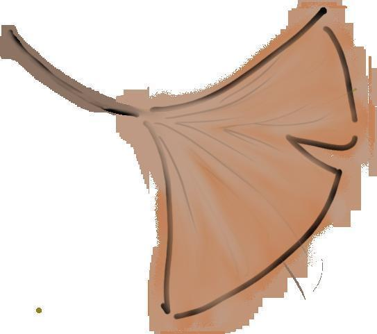
秋意渐浓，我们在此相遇。经过前期的宣传，终于迎来了令人紧张的战队考察组面试。跟随小A的脚步，一起来看看吧！

Part 01/
面试候场
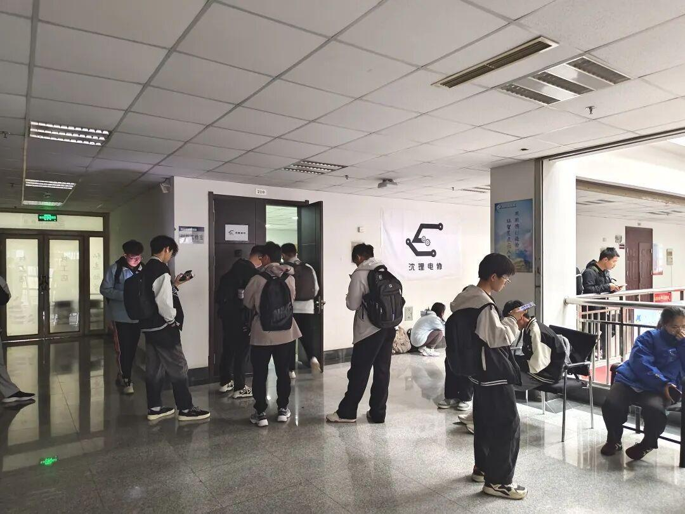
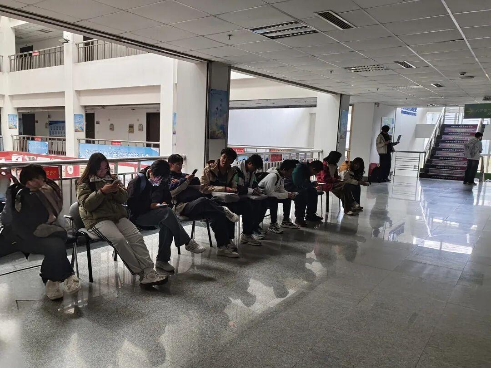
战队面试前，同学们陆续在候场等待。大家的状态各不相同，有的人心跳加速，满是紧张；而有的人则胸有成竹，满怀自信。但在这一时刻，每一个人其实都是在追求自己的梦想，期待着未来能因加入战队而变得更加精彩。

Part 02/
面试过程
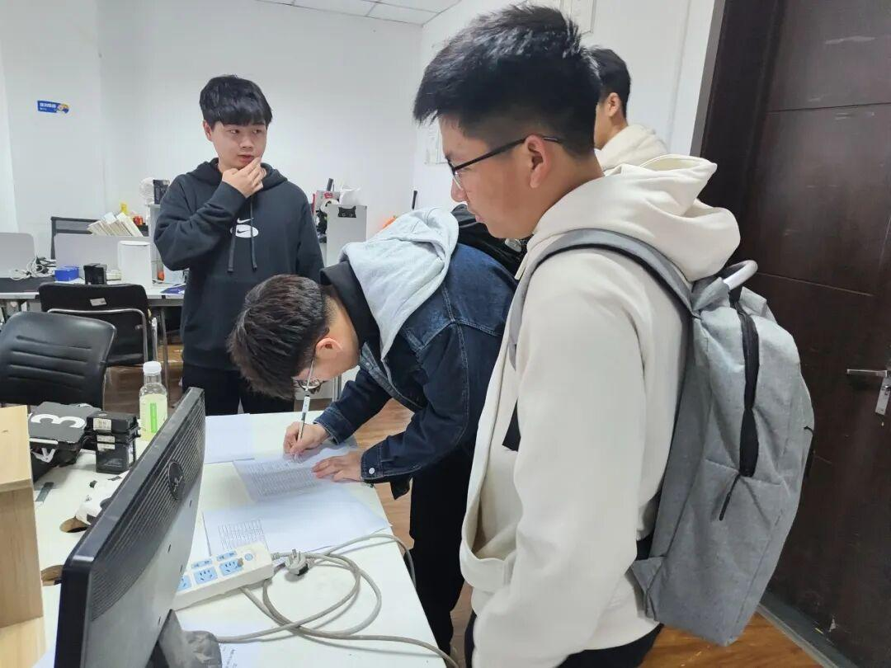
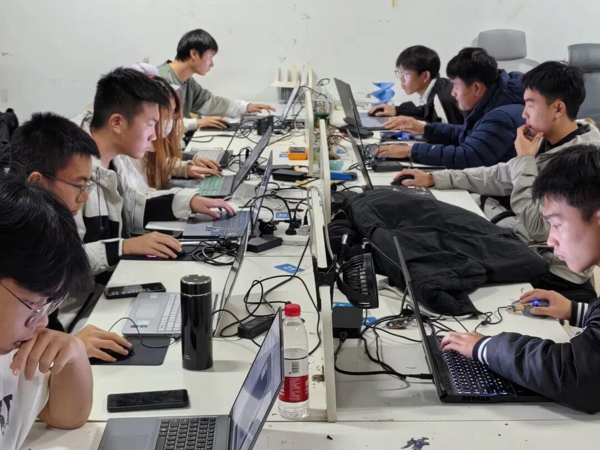
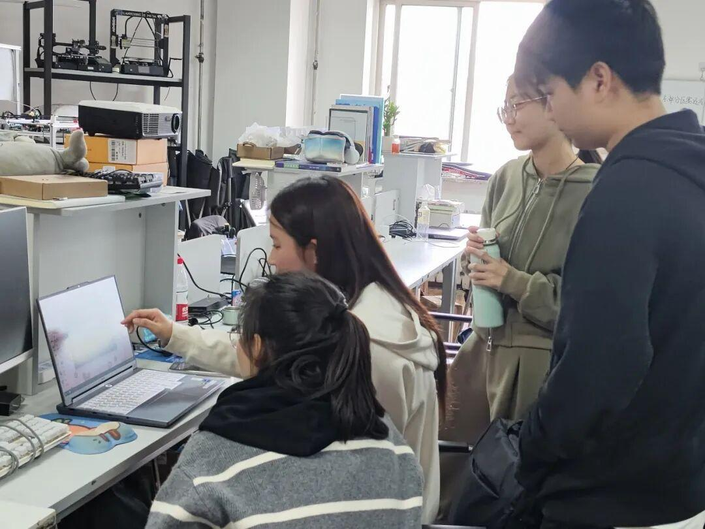
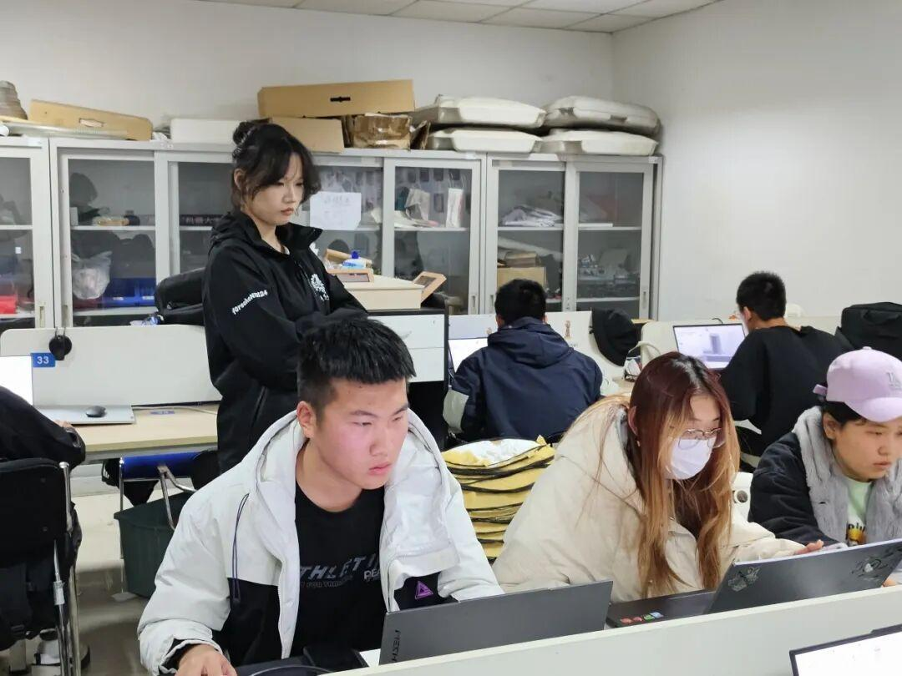
（来自学姐的注视）
战队面试分为嵌入式、视觉、运营、机械四个组别。为了考察大家的基础和潜力，技术组专门准备了现场考核验收环节。其中，视觉组和嵌入式组在现场根据提前所下发考核任务的代码完成情况进行提问，并指出存在的问题；机械组安排了线下考核，让大家在规定时间内现场测量一个零件并进行绘制，同时安排学长学姐监考，以确保考核公平公正。除了各技术组准备了专业性较强的现场考核，运营组也对新生进行了一一面试。
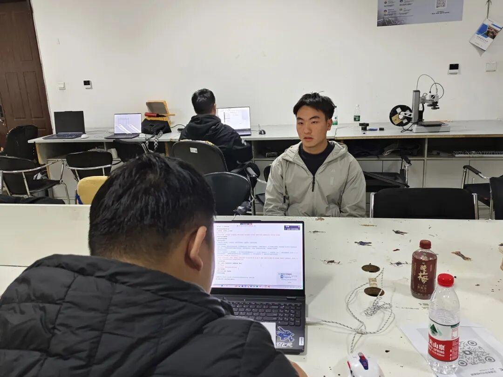
“一对一面试 ”
有没有感受到来自学长的压力，有没有从学长学姐们严谨的态度中感受到一种期待与信任？
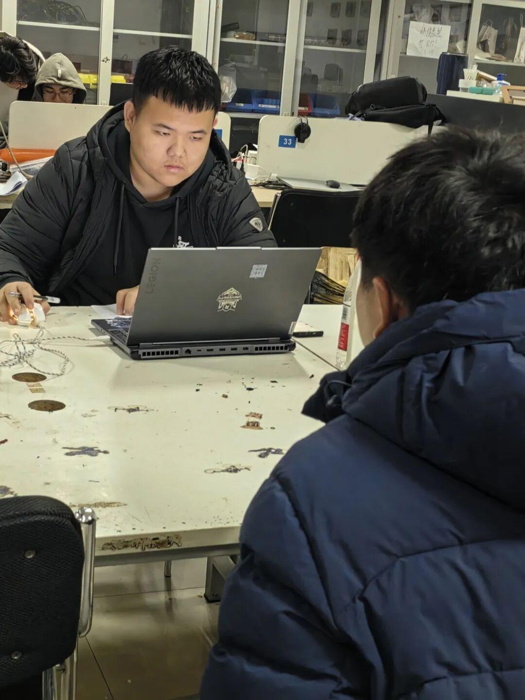
Part 03/
面试结果
经过紧张刺激的面试，一共有87名同学加入我们。有来自七个学院的同学，其中嵌入式组录取人数遥遥领先。
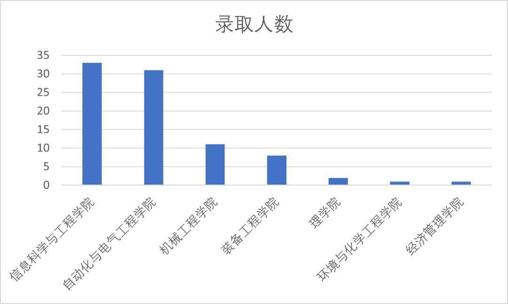
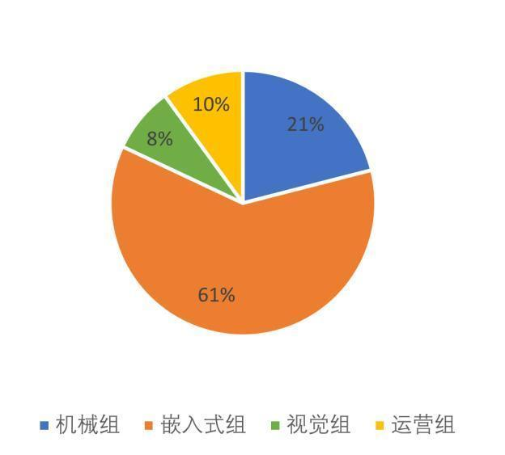
感谢大家的积极参与，让我们遇见了优秀的你们，愿我们的团队因你们的加入而更加充满活力，愿你们的梦想在这里得到绽放。在未来的日子里，让我们携手并进，共同成长，书写属于我们的辉煌篇章。

END
推文|青唐三月
图片|Ambition战队运营组
审核|XX敏